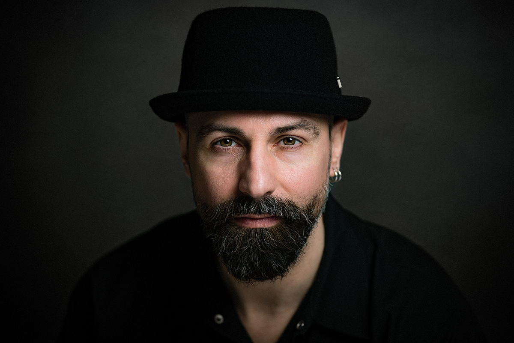

Vissza a nyitólapra
Rafael
Gyermekkorom óta ugyanúgy vonzottak a nyüzsgő amerikai metropoliszok vagy éppen a végtelen "vadnyugat" mint a mesés és misztikus Távol-Kelet. Több évet töltöttem ezekben az országokban így a legeldugottab zugait is ismerem a nagyvárosoknak, tudom melyik látványosságot érdemes megnézni így authentikusabb túravezetést tudok adni, vagy akár bepillantást kaphattok a helyiek életébe egy ázsiai túra alkalmával.
Az amerikai és ázsiai utak specialistája
Néhány úticél az aktuális kínálatból
Tokyo

New York
San Francisco

Shanghai

Hobbik
A fotózás az egyik hobbim, évek óta fotózom, főleg esküvői illetve boudoir fotósként tartanak számon. A másik hobbim pedig a zene, 14 éves korom óta játszom zenekarokban, jelenleg a Cult Devil zenekar énekese vagyok.